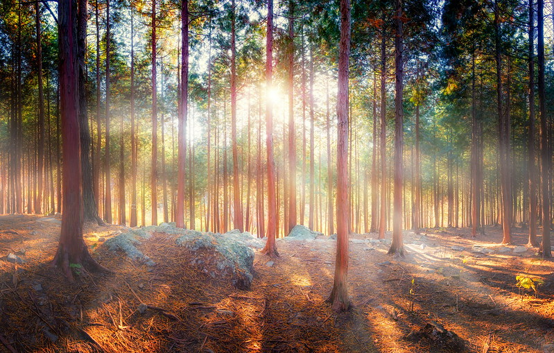

Jill has an ablity to become invisible. When ever she's angry and doesnt want co-operate in a situation, she turns invisble. She does this because it helps her to be less interactive with others as she vent alone where no one can see her. She loves doing this in the forest
 "forest light" by neil1877 is marked with CC BY-NC-ND 2.0